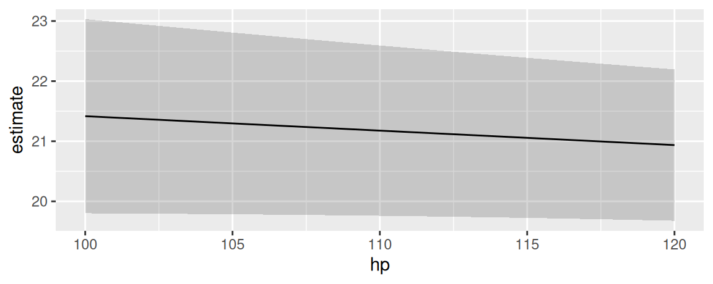

library(marginaleffects)
dat <- mtcars
dat$cyl <- as.factor(dat$cyl)
dat$am <- as.logical(dat$am)
mod <- lm(mpg ~ hp + cyl + am, data = dat)Marginal Means
In the context of this package, “marginal means” refer to the values obtained by this three step process:
- Construct a “grid” of predictor values with all combinations of categorical variables, and where numeric variables are held at their means.
- Calculate adjusted predictions for each cell in that grid.
- Take the average of those adjusted predictions across one dimension of the grid to obtain the marginal means.
For example, consider a model with a numeric, a factor, and a logical predictor:
Using the predictions function, we set the hp variable at its mean and compute predictions for all combinations for am and cyl:
p <- predictions(
mod,
newdata = datagrid(am = unique, cyl = unique))For illustration purposes, it is useful to reshape the above results:
| cyl | TRUE | FALSE | Marginal means by cyl |
|---|---|---|---|
| 6 | 21.0 | 16.9 | 19.0 |
| 4 | 25.0 | 20.8 | 22.9 |
| 8 | 21.4 | 17.3 | 19.4 |
| Marginal means by am | 22.5 | 18.3 |
The marginal means by am and cyl are obtained by taking the mean of the adjusted predictions across cells. We can achieve the same results with the predictions() function, with datagrid() to specify a balanced grid, and the by argument to define the marginalization dimension:
predictions(
mod,
by = "am",
newdata = datagrid(am = unique, cyl = unique))
#>
#> am Estimate Std. Error z Pr(>|z|) S 2.5 % 97.5 %
#> TRUE 22.5 0.834 26.9 <0.001 528.6 20.8 24.1
#> FALSE 18.3 0.785 23.3 <0.001 397.4 16.8 19.9
#>
#> Type: response
#> Columns: am, estimate, std.error, statistic, p.value, s.value, conf.low, conf.highAlternatively, we can use the convenient newdata="balanced" argument:
predictions(
mod,
by = "cyl",
newdata = "balanced")
#>
#> cyl Estimate Std. Error z Pr(>|z|) S 2.5 % 97.5 %
#> 6 19.0 1.07 17.7 <0.001 229.7 16.9 21.1
#> 4 22.9 1.36 16.9 <0.001 209.7 20.2 25.5
#> 8 19.4 1.38 14.1 <0.001 146.6 16.7 22.1
#>
#> Type: response
#> Columns: cyl, estimate, std.error, statistic, p.value, s.value, conf.low, conf.highWe can of course marginalize over the interaction between more variables, by changing the by argument:
predictions(
mod,
by = c("am", "cyl"),
newdata = "balanced")
#>
#> am cyl Estimate Std. Error z Pr(>|z|) S 2.5 % 97.5 % hp
#> TRUE 6 21.0 1.21 17.3 <0.001 221.4 18.7 23.4 147
#> TRUE 4 25.0 1.18 21.2 <0.001 329.3 22.7 27.3 147
#> TRUE 8 21.4 1.83 11.7 <0.001 103.2 17.9 25.0 147
#> FALSE 6 16.9 1.27 13.3 <0.001 130.9 14.4 19.4 147
#> FALSE 4 20.8 1.76 11.8 <0.001 105.1 17.4 24.2 147
#> FALSE 8 17.3 1.12 15.5 <0.001 176.8 15.1 19.5 147
#>
#> Type: response
#> Columns: rowid, am, cyl, estimate, std.error, statistic, p.value, s.value, conf.low, conf.high, hp, mpgThe same results can be achieved using the powerful emmeans package:
library(emmeans)
emmeans(mod, specs = ~cyl)
#> cyl emmean SE df lower.CL upper.CL
#> 4 22.9 1.36 27 20.1 25.7
#> 6 19.0 1.07 27 16.8 21.2
#> 8 19.4 1.38 27 16.5 22.2
#>
#> Results are averaged over the levels of: am
#> Confidence level used: 0.95
emmeans(mod, specs = ~cyl + am)
#> cyl am emmean SE df lower.CL upper.CL
#> 4 FALSE 20.8 1.76 27 17.2 24.4
#> 6 FALSE 16.9 1.27 27 14.3 19.5
#> 8 FALSE 17.3 1.12 27 15.0 19.6
#> 4 TRUE 25.0 1.18 27 22.5 27.4
#> 6 TRUE 21.0 1.21 27 18.6 23.5
#> 8 TRUE 21.4 1.83 27 17.7 25.2
#>
#> Confidence level used: 0.95Marginal Means vs. Average Predictions
What should scientists report? Marginal means or average predictions?
Many analysts ask this question, but unfortunately there isn’t a single answer. As explained above, marginal means are a special case of predictions, made on a perfectly balanced grid of categorical predictors, with numeric predictors held at their means, and marginalized with respect to some focal variables. Whether the analyst prefers to report this specific type of marginal means or another kind of average prediction will depend on the characteristics of the sample and the population to which they want to generalize.
After reading this vignette and the discussion of emmeans in the Alternative Software vignette, you may want to consult with a statistician to discuss your specific real-world problem and make an informed choice.
Plot conditional marginal means
The marginaleffects package offers several functions to plot how some quantities vary as a function of others:
-
plot_predictions: Conditional adjusted predictions – how does the predicted outcome change as a function of regressors? -
plot_comparisons: Conditional comparisons – how do contrasts change as a function of regressors? -
plot_slopes: Conditional marginal effects – how does the slope change as a function of regressors?
There is no analogous function for marginal means. However, it is very easy to achieve a similar effect using the predictions() function, its by argument, and standard plotting functions. In the example below, we take these steps:
- Estimate a model with one continuous (
hp) and one categorical regressor (cyl). - Create a perfectly “balanced” data grid for each combination of
hpandcyl. This is specified by the user in thedatagrid()call. - Compute fitted values (aka “adjusted predictions”) for each cell of the grid.
- Use the
byargument to take the average of predicted values for each value ofhp, across margins ofcyl. - Compute standard errors around the averaged predicted values (i.e., marginal means).
- Create symmetric confidence intervals in the usual manner.
- Plot the results.
library(ggplot2)
mod <- lm(mpg ~ hp + factor(cyl), data = mtcars)
p <- predictions(mod,
by = "hp",
newdata = datagrid(
model = mod,
hp = seq(100, 120, length.out = 10),
cyl = mtcars$cyl))
ggplot(p) +
geom_ribbon(aes(hp, ymin = conf.low, ymax = conf.high), alpha = .2) +
geom_line(aes(hp, estimate))